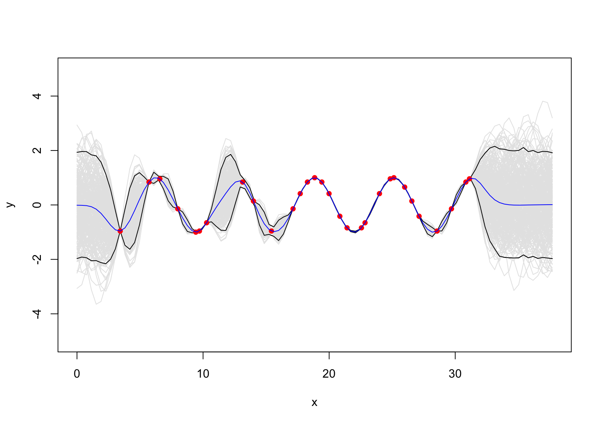
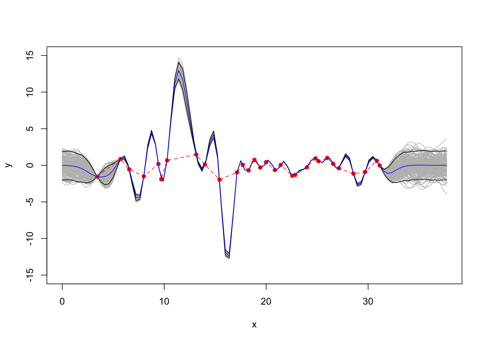
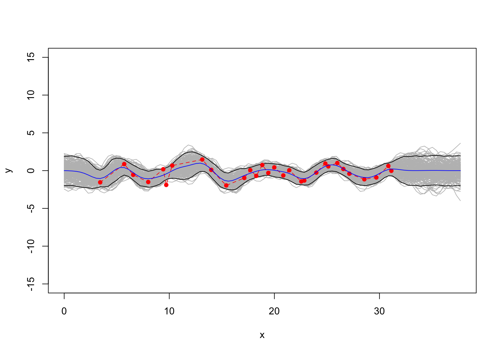

1. Garnett R. Bayesian optimization. Cambridge University Press; 2023.
Having observed \(f\) at locations \(\boldsymbol{x}\), we define \(\boldsymbol{\phi }= f(\boldsymbol{x})\), and \(D = (\boldsymbol{x}, \boldsymbol{\phi})\). Also suppose that \[
p(\boldsymbol{\phi}|\boldsymbol{x}) = \mathcal{N}(\boldsymbol{\phi};\boldsymbol{\mu},\boldsymbol{\Sigma}).
\tag{1}\]
The cross-covariance of a function value \(x\) vs. the observed \(D\) is \[
\kappa(x) = \text{cov}(\boldsymbol{\phi},\phi|\boldsymbol{x},x) = K(\boldsymbol{x},x),
\] and we then have
We now suppose that we can only observe \(\boldsymbol{y} = \boldsymbol{\phi }+\boldsymbol{\varepsilon}\) where \[
p(\boldsymbol{\varepsilon}|\boldsymbol{x}, \boldsymbol{N}) = \mathcal{N}(\boldsymbol{\varepsilon};\boldsymbol{0},\boldsymbol{N}), \text{ and } \boldsymbol{\varepsilon }\perp \boldsymbol{\phi}.
\]
Under the assumption of homoscedastic noise we have \(\boldsymbol{N} = \sigma^2_n\boldsymbol{I}\) and, thus, \[
p(\boldsymbol{y}|\boldsymbol{x},\boldsymbol{N}) = \mathcal{N}(\boldsymbol{y}; \boldsymbol{\mu},\boldsymbol{\Sigma}+\boldsymbol{N}).
\] The covariance \(\kappa(x) = \text{cov}[\boldsymbol{y},\phi|\boldsymbol{x}, x]\) remains unchanged, i.e. equals \(K(\boldsymbol{x}, x)\). Conditional on observed \(\boldsymbol{x}\), the GP posterior is \[
\begin{aligned}
&\mu_D(x) = \mu(x) + K(x, \boldsymbol{x})(\boldsymbol{\Sigma}+\boldsymbol{N})^{-1}(\boldsymbol{y} - \boldsymbol{\mu})\\
&K_D(x,x_*) = K(x,x_*) - K(x,\boldsymbol{x})(\boldsymbol{\Sigma }+ \boldsymbol{N})^{-1}K(\boldsymbol{x}, x_*)
\end{aligned}
\tag{3}\]
3 Some examples
We shall consider the function \[
y = \cos(x),\quad x \in[0, 12\pi]
\] which is deterministic. Suppose we observed \(30\) data points that are shown in Figure 1
Figure 1: \(y = \sin(x)\). The gray area represents GP \(p(\boldsymbol{\phi}|\boldsymbol{x})= \mathcal{GP}(\boldsymbol{\phi}; \boldsymbol{0}, \exp\{-\frac{\text{distance}^2(\boldsymbol{x})}{2}\})\)
If there is no additive error term, the fitting GP is shown in Figure 2.
d_xxx =distance(x,xx)SSS =exp(-d_xxx/2)mu =t(SSS)%*%solve(S)%*%as.matrix(y)sigma = SS -t(SSS)%*%solve(S)%*%SSSy_pos = mvtnorm::rmvnorm(10000, mu, sigma)|>t()ci =apply(y_pos,1, HDInterval::hdi)m =apply(y_pos,1, mean)matplot(xx, t(ci), type ="l", col ="black", lty =1, ylim =c(-5,5), xlab ="x", ylab ="y" )for(i insample(10000,300)) lines(xx, y_pos[,i], col ="grey90")matplot(xx, t(ci), col ="black", lty =1, add = T, type ="l")#lines(x, m )points(x, y, pch =16, col ="red")lines(xx,m,col ="blue")

Figure 2: Standard GP without error term.
We now add the error term \(p(\varepsilon) =\mathcal{N}(\varepsilon; \mu =0,\sigma =1)\) to the data but fitting the GP without considering the error. The resulting posterior seems overfitting.
set.seed(11)SD =1y =cos(x)+rnorm(length(x), sd = SD)d =distance(x)S =exp(-d/2)SD =0# seq(0.01,0.2, length.out = length(x))N =diag(SD^2, length(x))mu =t(SSS)%*%solve(S+N)%*%as.matrix(y)sigma = SS -t(SSS)%*%solve(S+N)%*%SSSy_pos = mvtnorm::rmvnorm(10000, mu, sigma)|>t()ci =apply(y_pos,1, HDInterval::hdi)m =apply(y_pos,1, mean)matplot(xx, t(ci), type ="l", col ="black", lty =1, ylim =c(-15, 15), xlab ="x", ylab ="y" )for(i insample(10000,200)) lines(xx, y_pos[,i], col ="gray")matplot(xx, t(ci), col ="black", lty =1, add = T, type ="l")#lines(x, m )lines(x, y, pch =16, col ="red", type ="o", lty =2)lines(xx, m, pch =16, col ="blue", type ="l", cex =1.2)

Figure 3: the data with additive error \(\mathcal{N}(\varepsilon; \mu =0,\sigma =1)\) but the GP is fitted without considering the error.
Next, we fit the GP where the hyperparameter \(\sigma = 0.5\) in the error term is considered. The resulting posterior is shown in Figure 4
set.seed(11)SD =1y =cos(x)+rnorm(length(x), sd = SD)d =distance(x)S =exp(-d/2)SD =0.68# seq(0.01,0.2, length.out = length(x))N =diag(SD^2, length(x))mu =t(SSS)%*%solve(S+N)%*%as.matrix(y)sigma = SS -t(SSS)%*%solve(S+N)%*%SSSy_pos = mvtnorm::rmvnorm(10000, mu, sigma)|>t()ci =apply(y_pos,1, HDInterval::hdi)m =apply(y_pos,1, mean)matplot(xx, t(ci), type ="l", col ="black", lty =1, ylim =c(-15, 15), xlab ="x", ylab ="y" )for(i insample(10000,200)) lines(xx, y_pos[,i], col ="gray")matplot(xx, t(ci), col ="black", lty =1, add = T, type ="l")#lines(x, m )lines(x, y, pch =16, col ="red", type ="o", lty =2)lines(xx, m, pch =16, col ="blue", type ="l")

Figure 4: The posterior GP fitted using \(\sigma=1\).
A question arising is how do we know \(\sigma=1\)? There emerges a range of solutions to specify \(\sigma\). If we assign a pre-specified level of uncertainty into \(\sigma\), a full Bayesian method can be employed. An alternative, which can save computational time complexity, is the maximum likelihood estimation calculated using the observed data. However, proceeding MLE sometimes reaches an impasse as the derivative of some density functions is not a piece of cake.
\(\hat\sigma_{ML}\) can be specified numerically as follows:
set.seed(1111)x =seq(pi,10*pi,length.out=100)|> {\(i) i[sample(100, 30)] }()|>sort()|>matrix(ncol =1)set.seed(11)SD =1y =cos(x)+rnorm(length(x), sd = SD)f =function(g,x,y){ D =distance(x) S =exp(-D/2) n =length(y) N =diag(g^2, n) K = S+N-mvtnorm::dmvnorm(x =drop(y), sigma = K, log = T)}g =optimise(f, c(-3,4), y = y, x = x)$minimum; g
[1] 0.680613
The resulting estimator \(\hat\sigma_{ML} =\) 0.681 which is close to the pre-specified SD of \(1\) that is used to define the error \(\varepsilon\). The SD of 0.681 is also used to fit the GP in Figure 4.